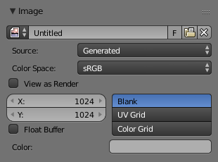

Устави Зображення -- Image Settings¶

Панель «Зображення» -- Image panel.
- Зображення -- Image
Меню блоку даних.
- Нове -- New
+ - Кнопка «Нове» -- New відкриває спливне меню для конфігурування генерованого -- Generated зображення.
- Нове -- New
Джерело¶
Дивіться детальніше тут -- Підтримувані Формати Графіки -- Supported Graphics Formats.
Одиничне Зображення -- Single Image¶
Беззмінне зображення або одиничний кадр.
Відеоряд Зображень -- Image Sequence¶
Each frame is stored in a separate file. How to Opening an Image Sequence.
- Кадр -- Frame
- Позначка, що показує поточний кадр.
- Додаткові опції
- Дивіться Movie .
Фільм -- Movie¶
Кадри, запаковані у контейнер.
- Знечергованість -- Deinterlace
- Removes fields in a video file. For example, if it is an analog video and it has even or odd interlacing fields.
- Поля -- Fields
- Задає кількість полів на зображений кадр (2 поля в 1 кадрі). Використовується для чергованого, черезрядкового відео та говорить, чи кожне зображення має обидва непарне та парне поля, чи тільки одне з них.
- Кадр -- Frame
- Кадри -- Frames
- Установлює діапазон кадрів для використання.
- Старт -- Start
- Global starting frame of the sequence, when the playback should start. This is a global setting which means it affects all clip users such as the Movie Clip editor itself, motion tracking constraints and compositor nodes.
- Зсув -- Offset
- Зсуває перший кадр кліпу. Він додає додатковий зсув у кількість кадрів, коли конвертує кадр сцени у номер кадру в імені файлу. Ця опція не впливає на дані простеження або будь-які інші асоційовані дані.
- Підібрати Довжину за Відео -- Match Movie Length
- Ця кнопка установлює довжину користувацького зображення за одним з вибраних відео.
- Авто Оновлення -- Auto Refresh
- Автоматично освіжає зображення при змінах кадрів.
- Зациклення -- Cyclic
- Починає з початку та повторює після останнього кадру для створення безперервного циклу.
Генероване -- Generated¶
Image generated in Blender or pre-loaded.

Панель «Зображення» -- Image для джерела «Генероване» -- Generated. |

Спливне меню «Нове Зображення» -- New Image. |
- Ширина -- Width, Висота -- Height
- Розмір зображення у пікселях.
- Колір -- Color
- Задає колір заливки, якщо створюється порожнє зображення.
- 32 bit Float / Float Buffer
- Створює 32-бітне зображення. Воно має великий розмір файлу, але утримує більше колірної інформації, ніж стандартне 8-бітне зображення. Для ближніх планів та великих градієнтів можливо і краще використовувати 32-бітне зображення.
- Тип -- Type
- Порожнє -- Blank
- Створює Порожнє, пусте зображення, забарвлене одиничним вказаним кольором.
- UV Сітка -- UV Grid
- Створює зображення з шаховим взірцем, що у кожній комірці має забарвлений хрестик (+).
- Кольорова Сітка -- Color Grid
- Створює більш складну забарвлену сітку з літерами та числами, що позначають локації на сітці. Вона може використовуватися для тестування, як UV були розкладені, та для скорочення розтягнення або спотворення розкладки.
Загальні опції¶
- Файл -- File
Використовується для заміни або пакування файлів.
- Упакування -- Pack
- Вбудовує ресурс у поточний blend-файл.
- Шлях -- Path
- Шлях до пов'язаного файлу.
- Відкриття -- Open
- Відкриває Оглядач Файлів -- File Browser для вибору файлу з диску.
- Перезавантаження -- Reload
- Перезавантажує файл. Корисно, коли файл було перероблено у зовнішньому застосунку.
- Колірний Простір -- Color Space
Color Space -- «Колірний Простір».
- XYZ
- Простір XYZ.
- VD16
- Проста конверсія відео з простору sRGB з гаммою 2.2.
- sRGB
- Стандартний RGB простір для показу.
- Сире -- Raw
- Необроблений, сирий простір кольорів.
- Не-Колір -- Non-Color
- Колірний простір, що використовується для зображень, які містять не-колірні дані (наприклад, карти нормалей).
- Лінеарно ACES -- Linear ACES
- Лінійний простір Академічної Системи Кодування Кольору -- ACES Американської академії кінематографічних мистецтв і наук.
- Лінеарно -- Linear
- Лінеарно 709 (повний діапазон). Рідний лінійний колірний простір Blender'а.
- Огляд як Зображ -- View as Render
- Застосовує частину зображу трансформування показу при показуванні цього зображення на екрані.
- Вжити Багато-Огляд -- Use Multi-View
- Детальніше дивіться тут -- Multi-View.
- Вжити Альфа -- Use Alpha
Визначає, чи буде використовуватися канал альфа-прозорості зображення.
- Режим Альфа
Alpha Channel -- «Альфа Канал».
Прямо -- Straight, Передмножене -- Premultiplied
- Поля -- Fields
Work with Поля -- Fields images. Video frames consist of two different images (fields) that are merged. This option ensures that when fields are rendered, the correct field of the image is used in the correct field of the rendering. Mip-mapping cannot be combined with Fields. Order of video fields:
Спершу Вище -- Upper First, Спершу Нижче -- Lower First.